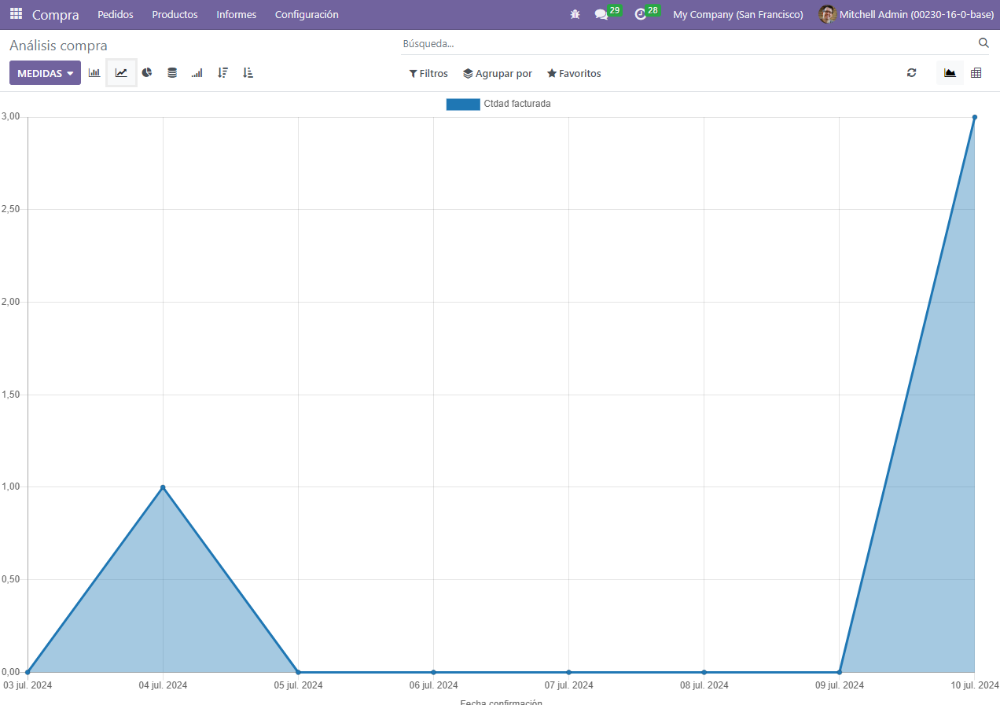
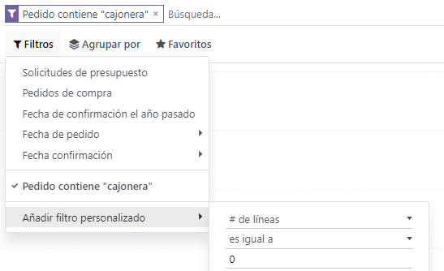
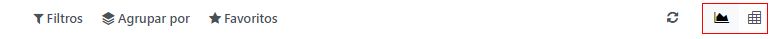
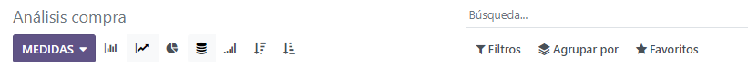
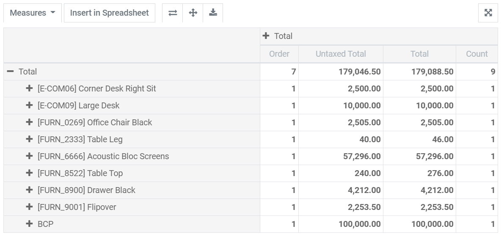

Analyze the performance of your purchases¶
If your company regularly purchases products, you have several reasons to track and analyze your performance. The insights gathered can help you to better forecast and plan your future orders. For example, you can assess if your business is dependent on particular vendors, and the data can help you negotiate discounts on prices.
Generate customized reports¶
Go to Reporting to access the purchase analysis. Simply by accessing the reporting dashboard, you can get a quick overview of your actual performance. By default, the reporting dashboard displays a line chart presenting the untaxed amount of your purchase orders per day, and below it, key metrics and a pivot table.
While the data initially presented is useful, there are several tools and features you can use to get even more insights on your purchases.
Use filters to select the data you need¶
Odoo offers several default filters you can use and combine by clicking on Filters. When you select one or several filters, Odoo looks for all the orders that match at least one of the filters you have chosen and populates the chart, key metrics, and pivot table with the data. The pre-configured filters are:
All Requests for Quotation
All Purchase Orders, except canceled ones
Confirmation Date Last Year includes all orders that were confirmed the previous year, canceled purchase orders included
Order Date includes all orders - request for quotations and purchases orders (canceled ones included) - depending on their date of creation
Confirmation Date includes all confirmed orders, canceled ones included, depending on their date of confirmation
Note
When you have to select a period, you can use multiple years, and, with at least one year selected, multiple quarters and the three most recent months.
Tip
If you use the Order Date or Confirmation Date filters, the Comparison feature appears next to Filters. It enables you to compare the period you filtered with the previous one.
Add custom filters¶
Thanks to the 31 filtering options to choose from, the possibilities of your customizing your dataset are almost limitless. Go to , specify the condition the filtering option should meet (e.g. is equal to, contains, etc.), and click on Apply. If you want to select orders matching several conditions simultaneously (and operator), repeat the process to add another custom filter. If you want to use the or operator, don’t click on Apply, and click on Add a condition instead. Once you have added all the desired filtering options, click on Apply.
Tip
To avoid having to recreate custom filters every time, save them by clicking on . The customized search filter can then be accessed by clicking on Favorites or can even be set as the default filter when you open the reporting dashboard.
Measure exactly what you need¶
Before selecting what you want to measure, you need to decide whether you prefer using the graph view or the pivot view. By default, the dashboard presents both views. However, the measures you select won’t be applied to both views. You can access each view separately by clicking on the icons at the top right of the dashboard.
Visualize your data¶
You can transform the main graph in just a click by selecting one of the three charts: bar, line or pie. Fourteen different measures are available, but you can only use one at a time. However, you can group the measure using one or several of the 19 Groups.
For bar and line charts, the selected measure is your y-axis, and the first group you select is used to create the x-axis. Adding more group adds additional lines (line chart) or transforms your bar chart into a stacked bar chart. For pie charts, the more groups you select, the more slices are displayed.
Explore your data¶
The pivot table view enables you to explore your data in great detail. Unlike the graph view, the pivot table enables you to add several measures at the same time. By clicking on Measures or on the + sign in the Total column, you can add as many as you want, each assigned to a new column. By clicking on the + sign in the Total row, you can add Groups. If you click on a group’s + sign, you can add a sub-group, and so on.
Tip
You can insert your pivot table’s data directly in the Spreadsheet app or export it as an Excel file.